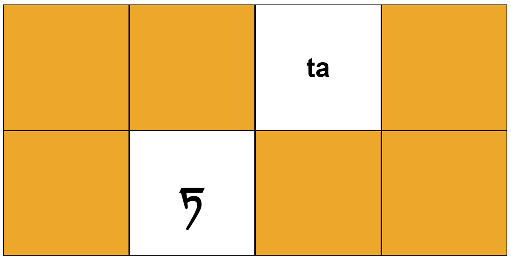

The tibetan alphabet is organized in 4 columns and 7 rows. The first 5 rows in the first 3 colums follow a strict pattern. You'll learn the first 15 lettern in the first lesson.
To represent the tibetan letters with english letters in this class the Wylie transliteration is used. The Wylie transliteration corresponds with the unicode letter names. The transliteration is not the pronounciation of the letter.
This site is based on the public classes from Geshe Michael Roach and Dr. Chok Tenzin Monlam. All soundsamples are taken from their publicly avaliable Videos.
Lesson 01 - The first 15 consonants Lesson 02 - Nasals / Column 4(1-5) Lesson 03 - All Consonants Lesson 04 - Vowel Marks First words and pictures
Play Tibetan Alphabet Memory

You can find a great implementation to learn the tibetan alphabet here:
ཀ་ཁ་ Tibetan Alphabet at bum-pa-mi-rtag-pa.site
Study card game
In this two videos Geshe Michael Roach teaches the whole tibetan alphabet: Tibetan Alphabet. Part 1 Tibetan Alphabet. Part 2
Here teaches Geshe Michael Roach the tibetan alphabet in multiple short videos: The Tibetan Alphabet
Dr. Chok Tenzin Monlam teaches tibetan vowels Tibetan vowels in 5 min
This wikipedia articel explains the Wylie transliteration used to encode the tibetan letters with english letters Wylie transliteration
Collection of free online resouces learntibetanlanguage.org
Here you find the unicode letters and escape codes Unicode